청소년상담사-1급(2교시) (2023-09-23 기출문제)
1과목: 비행상담
1. 청소년 관련 법령과 적용연령을 옳게 연결한 것은?
- 학교 밖 청소년 지원에 관한 법률 - 9세 이상 24세 이하
- 청소년활동 진흥법 - 10세 이상 19세 미만
- 청소년 기본법 - 19세 미만
- 청소년 보호법 - 9세 이상 24세 이하
- 아동ㆍ청소년의 성보호에 관한 법률 - 18세 미만
(정답률: 알수없음)
2. 청소년비행에 관한 설명으로 옳지 않은 것은?
- 청소년이라는 지위 때문에 비행으로 간주되어 지위비행이라고 한다.
- 처벌보다는 교육을 강조한다.
- 음주, 흡연, 가출 등이 대표적인 지위비행의 예이다.
- 형사법령에 금지된 행위가 아니므로 형사사법기관이 개입하지 않는다.
- 청소년비행은 시간적ㆍ공간적 상대성을 고려한다.
(정답률: 알수없음)
3. 사이버비행에 관한 설명으로 옳은 것을 모두 고른 것은?
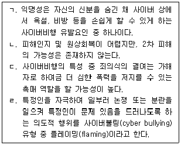
- ㄱ, ㄷ
- ㄴ, ㄹ
- ㄱ, ㄷ, ㄹ
- ㄴ, ㄷ, ㄹ
- ㄱ, ㄴ, ㄷ, ㄹ
(정답률: 알수없음)
4. 범죄자를 생물학적으로 열등한 존재라고 보는 생래적 범죄인(born criminals)설을 주장한 학자는?
- 롬브로조(C. Lombroso)
- 고링(C. Goring)
- 크레치머(E. Kretschmer)
- 쉘던(W. Sheldon)
- 고다드(H. Goddard)
(정답률: 알수없음)
5. 신경증적이고 외향적인 사람은 충동적이고 정서적으로 불안정하여 반사회적 행동과 관련이 있다고 주장한 학자는?
- 아들러(A. Adler)
- 프로이트(S. Freud)
- 스키너(B. Skinner)
- 아이젠크(H. Eysenck)
- 콜버그(L. Kohlberg)
(정답률: 알수없음)
6. 다음 사례에서 ( )에 들어갈 학자는?
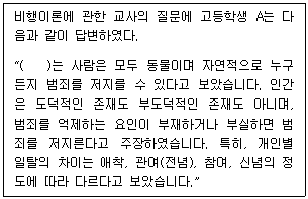
- 에그뉴(R. Agnew)
- 밀러(W. Miller)
- 싸익스와 맛짜(G. Sykes & D. Matza)
- 모피트(T. Moffitt)
- 허쉬(T. Hirchi)
(정답률: 알수없음)
7. 다음에서 설명하는 비행이론은?
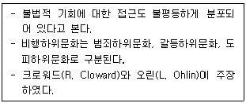
- 일반긴장이론
- 차별접촉이론
- 차별기회이론
- 아노미이론
- 사회학습이론
(정답률: 알수없음)
8. 낙인이론에 관한 설명으로 옳은 것은?
- 사회구조적 차원에서 범죄원인을 설명하는 이론이다.
- 베커(H. Becker)는 비행청소년은 나쁘다고 규정되기 때문에 나쁜 존재가 된다고 보았고, 이를 '악의 극화(Dramatization of Evil)'라고 표현하였다.
- 탄넨바움(F. Tannenbaum)은 특정 행동을 비행으로 규정하는 것뿐만 아니라 특정인의 행동을 비행으로 규정하는 것도 강조하였다.
- 레머트(E. Lemert)는 낙인을 받기 전에 행하는 비행행위를 일차적 일탈이라고 하였고, 일차적 일탈로 인해 발생되는 범죄를 이차적 일탈로 구분하였다.
- 낙인이론은 합의론적 관점을 바탕으로 한다.
(정답률: 알수없음)
9. 학교폭력예방 및 대책에 관한 법령상 가해학생에 대한 조치로 옳지 않은 것은?
- 퇴학처분은 의무교육과정에 있는 가해학생에 대하여는 적용하지 않는다.
- 가해학생에 대한 조치 요청이 있을 시, 교육장은 14일 이내에 해당 조치를 하여야 한다.
- 학교폭력대책심의위원회는 조치를 요청하기 전에 가해학생 및 보호자에게 의견진술의 기회를 부여해야 한다.
- 교육장이 학교폭력예방 및 대책에 관한 법률 제17조제1항에 따라 내린 조치에 대하여 이의가 있는 가해학생 또는 그 보호자는 행정심판법에 따른 행정심판을 청구할 수 있다.
- 가해학생에 대한 각 조치별 적용기준은 학교의 장이 정한다.
(정답률: 알수없음)
10. 학교폭력 주변인 유형 중 방어자의 특성에 해당하는 것을 모두 고른 것은?
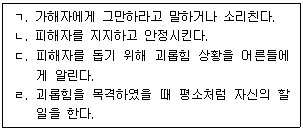
- ㄱ, ㄴ
- ㄴ, ㄷ
- ㄱ, ㄴ, ㄷ
- ㄱ, ㄷ, ㄹ
- ㄱ, ㄴ, ㄷ, ㄹ
(정답률: 알수없음)
11. 다음은 학교 밖 청소년 지원에 관한 법률의 내용이다. ( )에 들어갈 내용이 순서대로 옳게 나열된 것은?
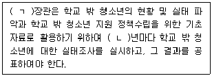
- ㄱ: 교육부, ㄴ: 2
- ㄱ: 여성가족부, ㄴ: 2
- ㄱ: 교육부, ㄴ: 3
- ㄱ: 여성가족부, ㄴ: 3
- ㄱ: 교육부, ㄴ: 5
(정답률: 알수없음)
12. 비행청소년 성격 평가에 사용하는 PAI(Personality Assessment Inventory)의 치료고려 척도에 해당하지 않는 것은?
- 공격성
- 스트레스
- 비지지
- 치료 거부
- 경계선적 특징
(정답률: 알수없음)
13. DSM-5에서 분류된 품행장애 진단기준으로 옳지 않은 것은?
- 자주 다른 사람을 괴롭히고, 위협하거나 협박한다.
- 다른 사람의 재산을 고의적으로 파괴한다.
- 13세 이전에 무단결석을 자주 한다.
- 분노ㆍ과민한 기분 및 논쟁적 행동특성을 보인다.
- 피해자와 대면하지 않은 상황에서 귀중품을 절도한다.
(정답률: 알수없음)
14. 비행청소년의 인지 기능 평가를 위한 웩슬러검사(K-WAIS-Ⅳ)의 지표와 소검사의 연결로 옳지 않은 것은?
- 언어이해 - 어휘, 지식, 이해
- 지각추론 - 토막 짜기, 행렬 추리, 무게 비교
- 동작기억 - 숫자, 행렬 추리, 동형 찾기
- 작업기억 - 숫자, 산수, 순서화
- 처리속도 - 동형 찾기, 기호 쓰기, 지우기
(정답률: 알수없음)
15. 다음 ( )에 들어갈 내용으로 옳은 것은?
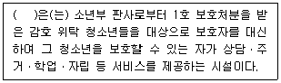
- 학교밖청소년지원센터
- 청소년쉼터
- 청소년회복지원시설
- 청소년자립지원관
- 청소년치료재활센터
(정답률: 알수없음)
16. 다음에서 설명하는 청소년비행 상담이론은?
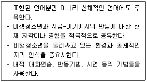
- 현실치료이론
- 개인심리이론
- 행동주의이론
- 게슈탈트이론
- 교류분석이론
(정답률: 알수없음)
17. 비행청소년의 상담과정에서 상담자의 행동주의적 개입으로 옳지 않은 것은?
- 적응적 행동에 대한 보상 및 강화를 제공한다.
- 내담자를 훈련시키기 위해 보호자, 교사의 협조를 구한다.
- 내담자를 전문가로 보고 문제 자체가 아니라 해결에 중점을 둔다.
- 치료계획을 수립하기 위해 초기에 진단이나 평가를 한다.
- 행동계약이나 숙제를 활용한다.
(정답률: 알수없음)
18. 다음 사례에서 상담자 A의 반응에 해당하는 것은?
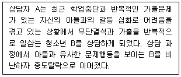
- 감정의 훈습
- 분석적 틀의 유지
- 저항의 분석
- 역전이
- 전이의 분석
(정답률: 알수없음)
19. 지역사회 청소년통합지원체계(청소년안전망)에 관한 설명으로 옳은 것은?
- 지역사회 청소년통합지원체계 구축의 주체는 청소년상담복지센터이다.
- 필수연계기관에는 지방자치단체, 교육청, 경찰청, 지역아동센터, 자살예방센터 등이 포함된다.
- 청소년복지지원법에 법적 근거를 두고 있다.
- 학교지원단은 지역사회 청소년통합지원체계를 강화하기 위해 위기청소년을 조기에 발견하고 보호하는 민간 참여 조직이다.
- 교육부는 지역사회 청소년통합지원체계의 구축ㆍ운영을 지원하여야 한다.
(정답률: 알수없음)
20. 비행청소년을 대상으로 하는 집단상담 종결 단계에서 상담자의 개입으로 옳은 것은?
- 다양한 방법을 통하여 비행청소년들이 감정을 표현하도록 한다.
- 미진사항을 다루고 성장과 변화에 대해 평가한다.
- 비행청소년들이 개인적인 목표와 집단의 전체 목표를 정확히 인지하도록 한다.
- 비행청소년들이 자신의 특성과 방어기제를 인식하도록 돕는다.
- 비행청소년들의 감정 및 비언어적 행동에 집중하면서 적극적으로 지지한다.
(정답률: 알수없음)
21. 다음에서 설명하는 상담 기법은?
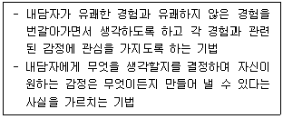
- 심상 만들기
- 자신을 포착하기
- 가상행동
- 격려하기
- 버튼 누르기
(정답률: 알수없음)
22. 소년법상 보호처분에 관한 설명으로 옳은 것은?
- 형벌 법령에 저촉되는 행위를 한 15세 소년은 소년부의 보호사건으로 심리한다.
- 수강명령은 50시간을 초과할 수 없다.
- 사회봉사명령 처분은 14세 이상의 소년에게만 할 수 있다.
- 단기 보호관찰 기간은 2년으로 한다.
- 단기로 소년원에 송치된 소년의 보호기간은 1년을 초과하지 못한다.
(정답률: 알수없음)
23. 다음에서 제시된 형사사법정책에 관한 설명으로 옳지 않은 것은?
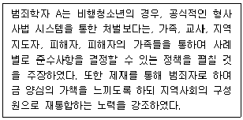
- 보상, 치유, 통합 등을 강조한다.
- 재통합적 수치심(Reintegrative Shaming)이론이 정책의 이론적 배경이다.
- 문제를 해결하기 위해서는 지역사회의 협력을 필요로 한다.
- 피해자-가해자 중재, 양형서클 등을 포함한 응보적 사법모델 중 하나이다.
- 범죄로 인한 피해를 회복하는 것을 강조한다.
(정답률: 알수없음)
24. 청소년보호법령상 청소년보호위원회에 관한 설명으로 옳지 않은 것은?
- 청소년유해매체물, 청소년유해약물등, 청소년유해업소 등에 관한 사항을 심의ㆍ결정한다.
- 위원회는 위원장 1명을 포함한 12명 이내의 위원으로 구성한다.
- 위원은 위원장의 추천을 받아 여성가족부장관의 제청으로 대통령이 임명하거나 위촉한다.
- 위원의 임기는 2년으로 하며, 연임할 수 있다. 다만, 당연직 위원의 임기는 그 재임기간으로 한다.
- 위원회의 회의는 재적위원의 과반수의 출석으로 개의하고, 출석위원 과반수의 찬성으로 의결한다.
(정답률: 알수없음)
25. 청소년정책기본계획의 정책기조 및 과제를 수립연도 순서대로 나열한 것은?
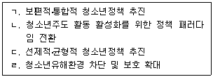
- ㄱ → ㄴ → ㄷ → ㄹ
- ㄱ → ㄷ → ㄴ → ㄹ
- ㄱ → ㄷ → ㄹ → ㄴ
- ㄴ → ㄱ → ㄷ → ㄹ
- ㄴ → ㄱ → ㄹ → ㄷ
(정답률: 알수없음)
2과목: 성상담
26. 성 연구자에 관한 설명으로 옳은 것은?
- 매스터스와 존슨(W. Masters & V. Johnson)은 실험실에서 성행동을 관찰하고 측정하였다.
- 후커(E. Hooker)는 연령, 교육, 지능 수준을 대응시킨 2개의 남자집단(동성애자와 양성애자집단)을 연구하였다.
- 킨제이(A. Kinsey)는 대규모 성행위 연구에서 노인층을 제외하였다.
- 모쉐(C. Mosher)는 여자의 성욕이라는 관점에서 남자의 성욕을 연구하였다.
- 허쉬펠드(M. Hirschfeld)는 일탈적인 성행위에 관심을 가졌으며 성의 정신병리학이라는 저서를 발표하였다.
(정답률: 알수없음)

27. 인간의 성욕 이론과 설명의 연결이 옳지 않은 것은?
- 진화 이론: 성적인 욕구와 행동에서 나타나는 성차도 진화된 것으로 본다.
- 사회학습 이론: 동일시와 모방도 성욕발달에 중요하다고 본다.
- 여성주의 이론: 성욕에 대한 의학적이고 생물학적인 견해를 중시한다.
- 행동주의 이론: 성적 행동은 강화와 처벌에 의해 학습된다고 본다.
- 사회학 이론: 사회제도가 성적인 표현에 대한 규칙에 영향을 미친다고 본다.
(정답률: 알수없음)
28. 프로이드(S. Freud)와 융(G. Jung)의 심리적 성 발달에 관한 설명으로 옳은 것은?
- 융에 의하면 남성의 무의식 속에는 이상적인 아니무스가 존재한다.
- 프로이드에 의하면 잠복기는 6~11세로 성적 관심이 잠재되어 있는 시기이다.
- 프로이드에 의하면 오이디푸스 콤플렉스는 어머니에 대한 증오로 생긴다.
- 융에 의하면 여성의 페르소나 밑에 잠자고 있는 아니마는 남성성의 본질이다.
- 프로이드에 의하면 리비도가 자기로부터 외부로 향하면 자기애가 강해진다.
(정답률: 알수없음)
29. 생물학적 성에 관한 설명으로 옳지 않은 것은?
- 여성의 자궁경부는 임신 유지 기능을 한다.
- 전립선에서 요도로 내려오는 사정관은 2개이다.
- 여성의 배란 시기에는 기초체온이 떨어진다.
- 임신 16주 내외로 태동을 느낀다.
- 여성의 생식기는 자궁, 난소, 난관 등이 있다.
(정답률: 알수없음)
30. 성역할 사회화에 관한 설명으로 옳지 않은 것은?
- 사회문화적으로 학습된 성을 젠더(gender)라고 한다.
- 부모는 자녀의 옷, 놀이기구, 과제 부여 등으로 성역할 사회화를 한다.
- 남성성과 여성성, 양성성, 미분화성으로 성역할 분류를 한 연구자는 미드(M. Mead)이다.
- 양성평등의식은 성역할 사회화 과정에서 이루어진다.
- 특정 사회에서 남성과 여성의 특징을 분류하는 것을 성고정 관념이라 한다.
(정답률: 알수없음)
31. 아래 사례의 어머니가 가진 성역할 정형화로 옳은 것은?
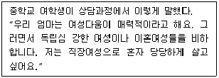
- 성 콤플렉스
- 신데렐라 콤플렉스
- 착한 콤플렉스
- 수퍼우먼 콤플렉스
- 맏딸 콤플렉스
(정답률: 알수없음)
32. 피임법의 종류 중 여성의 호르몬 조절법에 해당하는 것으로 옳은 것은?
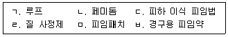
- ㄱ, ㄴ, ㄷ
- ㄴ, ㄹ, ㅁ
- ㄷ, ㅁ, ㅂ
- ㄴ, ㄷ, ㅁ, ㅂ
- ㄱ, ㄷ, ㄹ, ㅁ, ㅂ
(정답률: 알수없음)
33. 전문적인 성교육자의 자기 점검 내용으로 옳지 않은 것은?
- 성교육가로서 긍정적 신체 이미지
- 성에 대한 가치와 성적 활동, 성적 취향
- 성에 관련된 합리적 생각과 대처 능력
- 나이와 결혼 여부의 적절성
- 성교육에서 성 이야기를 할 때의 편안함
(정답률: 알수없음)
34. 스턴버그(R. Sternberg)의 사랑의 삼각형 이론에 관한 설명으로 옳은 것은?
- 도취된 사랑 = 친밀감
- 얼빠진 사랑 = 친밀감 + 헌신
- 낭만적 사랑 = 친밀감 + 열정
- 공허한 사랑 = 열정
- 우애적 사랑 = 열정 + 헌신
(정답률: 알수없음)
35. 다음 A군과의 상담에 관하여 상담자가 응답하는 내용으로 옳지 않은 것은?
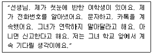
- A군이 그렇게 지속적으로 하는 행동은 스토킹 범죄가 될 수 있어요.
- 스토킹 행위는 점차 심각해지기 때문에 여기서 정리하는 것이 좋을 것 같은데요.
- A군이 학교 앞에서 계속 기다리는 것도 스토킹 행위가 될 수 있어요.
- 그 여학생이 1366이나 112에 신고할 수 있어요.
- A군은 잠정 조치로 전자발찌를 찰 수도 있어요.
(정답률: 알수없음)
36. 청소년이 경험하는 음란매체에 관한 설명으로 옳은 것은?
- 음란물 중독의 폐해는 청소년의 VDT증후군을 감소시킨다.
- 음란매체를 많이 경험할수록 왜곡된 성 지식이 증가한다.
- 음란물 중독은 청소년의 성범죄와는 상관이 없다.
- 사이버 성범죄는 폭력성게임이나 음란물과는 관련이 없다.
- 청소년 인터넷 고위험사용자의 90% 이상이 섹스팅을 한다.
(정답률: 알수없음)
37. A여학생이 데이트 폭력 피해 직후 대학 인권센터를 방문하였다. 이 때 상담자의 반응으로 옳은 것은?
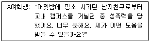
- 야간에 학생이 방심을 했군요. 조심해야죠.
- 참으로 힘들었겠네요. 우선 접수 후, 112신고도 가능하고, 의료 지원 도움도 받을 수 있어요.
- 부모님께 상의하는 것이 좋겠어요.
- 연인관계였으니 그냥 용서하세요.
- 성폭력 사건을 오래 기억하는 것은 좋지 않아요.
(정답률: 알수없음)
38. 에로티시즘에 관한 설명으로 옳지 않은 것은?
- 금기와 위반의 기제가 작동된다.
- 에로티시즘은 광고, TV, 미술, 문학, 영화 등에서 사용된다.
- 성별 차이와 성역할을 기초로 한다.
- 관능적인 성애주의이다.
- 어원은 에로스 신화에서 유래한다.
(정답률: 알수없음)
39. 디지털 성폭력에 해당하는 것을 모두 고른 것은?
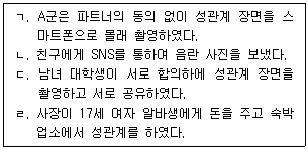
- ㄱ, ㄴ
- ㄴ, ㄷ
- ㄱ, ㄴ, ㄷ
- ㄴ, ㄷ, ㄹ
- ㄱ, ㄴ, ㄷ, ㄹ
(정답률: 알수없음)
40. 다음이 설명하는 용어는?
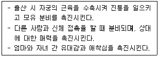
- 프로게스테론
- 옥시토신
- 세로토닌
- 도파민
- 페르몬
(정답률: 알수없음)
41. 캐스(V. Cass)가 제시한 동성애 성정체성 발달 과정에 관한 설명으로 옳은 것을 모두 고른 것은?
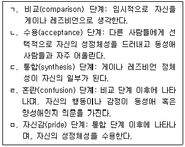
- ㄴ, ㅁ
- ㄱ, ㄴ, ㄷ
- ㄴ, ㄷ, ㄹ
- ㄱ, ㄷ, ㄹ, ㅁ
- ㄱ, ㄴ, ㄷ, ㄹ, ㅁ
(정답률: 알수없음)
42. 성소수자를 상담할 때 상담자가 갖추어야 할 자질과 행동으로 옳은 것은?
- 성소수자에 대한 상담자 자신의 태도와 감정, 신념은 고려하지 않는다.
- 내담자의 성적 지향이 가지고 있는 병리학적 요인을 파악한다.
- 내담자의 성적 지향성 때문에 상담을 거부하는 것은 윤리적으로 바람직하다.
- 성소수자가 직면하고 있는 사회적 편견과 차별을 이해한다.
- 상담자 자신의 성적 지향성을 내담자에게 알려야 한다.
(정답률: 알수없음)
43. DSM-5의 노출장애(Exhibitionistic Disorder)에 관한 설명으로 옳지 않은 것은?
- 연령이 적어도 16세 이상의 개인에게 진단된다.
- 사춘기 이전의 아동에게 성기를 노출함으로써 성적 흥분을 일으킨다.
- 신체적으로 성숙한 개인에게 성기를 노출함으로써 성적 흥분을 일으킨다.
- 성적 충동에 따른 행동으로 사회적 영역에서 임상적으로 현저한 고통을 초래한다.
- 노출증의 증상이 6개월 이상 지속될 경우에 진단된다.
(정답률: 알수없음)
44. 다음에 해당되는 성상담자의 상담기술은?
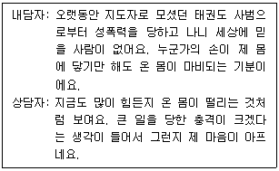
- 재진술(paraphrasing)
- 명료화(clarification)
- 감정반영(reflection)
- 직면(confrontation)
- 즉시성(immediacy)
(정답률: 알수없음)
45. 사이크스와 맞짜(G. Sykes & D. Matza)가 제시한 중화 기술(technique of neutralization) 중 다음 사례의 성폭력 가해 청소년 A가 사용하고 있는 기술은?
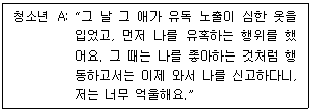
- 책임의 부인
- 피해자 부인
- 가해의 부인
- 비난자의 비난
- 충성심에의 호소
(정답률: 알수없음)
46. 아래 내용에 해당되는 청소년상담사 윤리강령의 항목은?
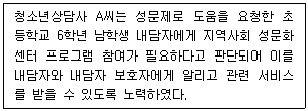
- 사생활과 비밀보장의 의무
- 성적 관계
- 내담자의 권리와 보호
- 심리평가의 실시
- 다양성 존중
(정답률: 알수없음)
47. 성폭력 피해 생존자 대상 지속노출치료(Prolonged Exposure Therapy)를 실시할 때 내담자에 해당하지 않는 것을 모두 고른 것은?
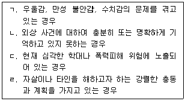
- ㄱ, ㄴ
- ㄷ, ㄹ
- ㄱ, ㄴ, ㄷ
- ㄴ, ㄷ, ㄹ
- ㄱ, ㄴ, ㄷ, ㄹ
(정답률: 알수없음)
48. 아동기 성폭력 생존자를 대상으로 레식(P. Resick)과 스나이크(M. Schnike)가 개발한 인지처리치료(Cognitive Processing Therapy)를 실시하려고 한다. 인지처리치료 12회기 프로그램에서 직접 다루고 있는 주제가 아닌 것은?
- 애착
- 안전
- 친밀감
- 힘과 통제
- 신뢰감
(정답률: 알수없음)
49. 성폭력피해 아동에 관한 개입 방안으로 옳지 않은 것은?
- 아동에게 성피해 사실을 밝힌 것은 용기있는 행동이라고 칭찬해준다.
- 어떤 상황에서든지 성폭력은 아동의 잘못이 아니라는 것을 확인시켜 준다.
- 피해아동에게 성폭력 발생 이전 상태로 돌아갈 수 있다는 기대를 가지도록 돕는다.
- 외형적으로 드러난 신체적 상처가 없다 할지라도 의료적 서비스를 받도록 한다.
- 아동이 안전하게 느끼도록 돕는다.
(정답률: 알수없음)
50. 아동ㆍ청소년 성보호에 관한 법령상 성매매 피해아동ㆍ청소년 지원에 관한 설명으로 옳지 않은 것은?
- 청소년상담복지센터에서 성매매 범죄 신고 접수 업무를 수행할 수 있다.
- 성매매 피해아동ㆍ청소년은 성매매 피해아동ㆍ청소년지원센터에서 제공하는 교육 프로그램에 참여하여야 한다.
- 아동ㆍ청소년의 성을 사는 행위의 상대방이 된 19세 미만의 아동ㆍ청소년에 대하여는 보호를 위하여 처벌하지 아니한다.
- 성매매 피해아동ㆍ청소년지원센터에서는 피해아동ㆍ청소년을 1개월까지 보호할 수 있다.
- 성매매 피해아동ㆍ청소년지원센터에서는 피해아동ㆍ청소년의 법정대리인을 대상으로 교육프로그램을 운영할 수 있다.
(정답률: 알수없음)
3과목: 약물상담
51. 중독 관련 용어에 관한 설명으로 옳은 것은?
- 블랙아웃은 환각 경험 일부가 약물 사용 없이도 나중에 재현되는 현상이다.
- 전구약물은 본래는 비활성이었다가 인체 내 효소에 의해 대사된 후 활성화되는 약물이다.
- 물질금단은 특정한 물질의 과도한 복용으로 인해 일시적으로 나타나는 부적응적 증상이다.
- 강화는 약물을 계속해서 일정량 투여 시 운동기능이 향상되는 것이다.
- 내성은 약물 혹은 행위 자체, 관련된 기억, 환경 자극에 의해 유발되는 조건화된 반응이다.
(정답률: 알수없음)
52. 중추신경 억제제로 작용하는 약물은?
- 메스암페타민
- 야바
- 메틸페니데이트
- 페노바르비탈
- 코카인
(정답률: 알수없음)
53. 청소년 약물중독 이론과 원인의 연결이 옳지 않은 것은?
- 공중보건모델: 유전, 주체, 환경 간의 상호작용
- 사회적 능력 모델: 약물사용 친구와의 강한 연대, 상호신뢰
- 사회적 무능력 모델: 사회적 기술 및 능력의 부족
- 성격모델: 학령기 이전의 공격성과 저항성, 성격장애
- 정신분석이론: 유아기에의 고착, 자아요소 간의 갈등
(정답률: 알수없음)
54. 우리나라 마약류 중독에 관한 설명으로 옳지 않은 것은?
- 2016년 이후 마약류 사범 중 여성은 1% 미만이다.
- 다크웹, SNS를 통한 접근성이 높아지면서 청소년 마약류 사범이 증가하고 있다.
- 2022년의 향정신성의약품이 마약의 검거율보다 높다.
- 2022년의 투약사범이 밀수사범보다 많다.
- 식욕억제제, 마취제 등 의료용 마약류의 남용이 늘어나고 있다.
(정답률: 알수없음)
55. 청소년 약물 사용을 설명하는 이론으로 옳은 것은?
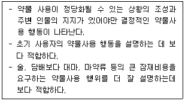
- 선택적 상호작용 이론
- 사회문화적 모델
- 상황일치 가설
- 합리적 선택 이론
- 권력 모델
(정답률: 알수없음)
56. 청소년 약물중독에 관한 설명으로 옳지 않은 것은?
- 청소년 약물사용에 관한 유전적 소인은 무시된다.
- 감각추구형의 감정 조절 어려움은 약물사용의 위험요소로 작용할 수 있다.
- 중독자의 부모는 일관성 없는 양육태도를 가지고 있을 가능성이 높다.
- 중독자 부모를 둔 청소년은 태아일 때부터 약물이나 알콜에 노출되었을 가능성이 있다.
- 부모의 음주는 청소년의 음주에 대한 태도와 규범에 영향을 줄 수도 있다.
(정답률: 알수없음)
57. DSM-5의 담배사용장애 진단기준으로 옳지 않은 것은?
- 담배에 대한 갈망감 혹은 욕구가 있다.
- 담배 사용량에 대해 지속적으로 거짓말을 한다.
- 담배 사용을 조절하려는 노력에도 불구하고 실패한다.
- 동일량의 담배를 사용하지만 그 효과가 현저히 감소한다.
- 11가지 증상 중 5개에 해당될 경우 중증도에 해당한다.
(정답률: 알수없음)
58. 청소년 A군의 약물남용 신호로 옳지 않은 것은?
- 횡설수설하며 폭력적인 언행이 증가한다.
- 생활하는 방에서 환각흡입 물질이나 빨대, 비닐봉지 등이 발견되는 경우가 있다.
- 필로폰의 사용으로 마른 잎이 탄 냄새가 몸에 배어있는 경우가 많다.
- 충혈된 눈, 잦은 눈물, 손, 발 등의 경미한 떨림을 보이기도 한다.
- 술 냄새가 나지 않는데도 술 취한 사람처럼 비틀거리기도 한다.
(정답률: 알수없음)
59. 제시된 약물과 합병증의 연결이 옳은 것을 모두 고른 것은?
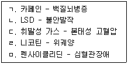
- ㄱ, ㄷ
- ㄴ, ㄷ, ㄹ
- ㄴ, ㄹ, ㅁ
- ㄱ, ㄴ, ㄹ, ㅁ
- ㄱ, ㄴ, ㄷ, ㄹ, ㅁ
(정답률: 알수없음)
60. 청소년 A군의 담배사용문제를 선별하기 위한 척도는?
- CAGE
- OCDS
- ALC
- SOGS
- FTND
(정답률: 알수없음)
61. 약물남용 관련 현행 법과 제도에 관한 설명으로 옳은 것은?
- 2017년에 마약류통합관리시스템을 도입하였다.
- 마약류 중독의 판별검사 기간은 2개월로 연장되었다.
- 마약류사범이 유죄판결을 선고받은 경우 100시간 이내의 수강명령을 받아야 한다.
- 환각물질 중독 청소년은 청소년 전문치료기관에서 6개월 이내의 치료 및 재활을 받을 수 있으며, 3개월 범위에서 연장할 수 있다.
- 보건복지부장관은 마약류 실태조사를 5년마다 실시해야 한다.
(정답률: 알수없음)
62. 의료용 마약류 식욕억제제의 안전사용 기준이 옳은 것을 모두 고른 것은?
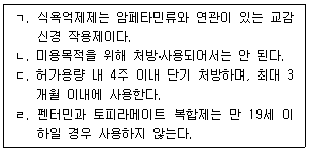
- ㄱ, ㄷ
- ㄴ, ㄹ
- ㄱ, ㄴ, ㄷ
- ㄴ, ㄷ, ㄹ
- ㄱ, ㄴ, ㄷ, ㄹ
(정답률: 알수없음)
63. 약물중독 청소년 A군을 위한 동기강화 상담의 목표로 옳은 것은?
- 약물사용 행동에 대해 자신이 변화해야만 하고 변화할 수 있다는 자각을 갖게 한다.
- 약물사용 행동에 영향을 미치는 요인에 초점을 두며, 문제 행동을 없앨 수 있는 방법을 찾는다.
- 약물사용 행동의 감소, 대인관계 기술 향상을 목적으로 한다.
- 신과의 관계회복을 통해 중요감-가치감, 안전감-친밀감의 욕구를 만족시키도록 조력하여 약물행동을 감소시키는 것이다.
- 내담자와 협력을 통해 문제 자체가 아니라 약물사용 행동 해결에 중심을 둔다.
(정답률: 알수없음)
64. 약물중독 청소년 A군을 위한 개인상담에서 상담중기에 다루어지는 주제로 옳은 것은?
- 절제와 상담을 위한 동기화
- 의학적인 방법을 연계한 해독
- 건강한 자아개념 형성하기
- 여전히 남아있는 역기능적 영향들 고려하기
- 재발에 대처할 수 있는 구체적 사고와 행동 고려하기
(정답률: 알수없음)
65. 알코올중독자 모임(AA)에 관한 설명으로 옳지 않은 것은?
- AA는 12단계를 기초로 하여 알콜 없는 만족한 삶을 영위하는 방법을 제안한다.
- AA의 구성원이 되기 위한 유일한 조건은 술이나 약물을 끊겠다는 열망이다.
- AA는 적절한 절주를 목표로 한다.
- AA의 근본 목적 중의 하나는 다른 알코올 의존자를 돕는 것이다.
- AA는 위대한 힘에 자신을 맡기며, 잘못한 일을 시인한다.
(정답률: 알수없음)
66. 다음 청소년 약물사용 집단이 다루는 주제로 옳은 것은?
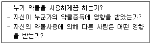
- 약물의존 증상
- 비탄과 고마움
- 부인
- 허용과 공동의존
- 대처기술과 사회화
(정답률: 알수없음)
67. 알코올중독 치료약으로 옳은 것은?
- 벤조디아제핀
- 아캄프로세이드
- 에페드린
- 암페타민
- 리탈린
(정답률: 알수없음)
68. 약물중독 재발방지 훈련에 포함되는 요소로 옳지 않은 것은?
- 돌봄에 대하여 의탁하기
- 변화에 대하여 결심 강화하기
- 변화유지에 중요한 기타 생활방식 발견하기
- 유혹에 대처하기 위하여 유용한 정보 제공하기
- 실수에 대비하기
(정답률: 알수없음)
69. 알콜중독 가족의 자녀 A군의 역할로 옳은 것은?
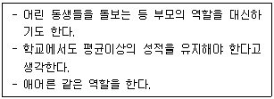
- 가족의 영웅
- 희생양
- 잊혀진 아이
- 귀염둥이
- 촉진자
(정답률: 알수없음)
70. 알콜중독자 가정의 A청소년이 가지고 있는 관심과 느끼는 감정 또는 행동으로 옳지 않은 것은?
- 행복한 가정에 사는 친구를 시기한다.
- 부모 모두 술을 마시는 경우에는 자신도 닮고 싶어 한다.
- 친구를 초대하지 않고, 친구 집에 놀러가지도 않는다.
- 자신이 보호 받아야 할 어린아이라고 생각할 때 외로움을 느낀다.
- 부모로부터 분리되거나 개별화된다고 생각한다.
(정답률: 알수없음)
71. 다음 증상이 공통적으로 나타나는 약물의 명칭은?
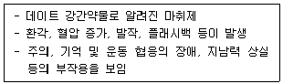
- 필로폰
- 에페드린
- 프로포폴
- 누트로픽
- 케타민
(정답률: 알수없음)
72. 약물 사용 청소년을 위한 집단상담 진행에 있어 상담자 A씨의 모습으로 옳지 않은 것은?
- 공감과 염려의 태도, 존중하는 목소리로 살피면서 진행한다.
- 동료 간의 직면을 특정 사람을 집단으로부터 밀어내는 도구로 사용하지 않아야 한다.
- 약물사용과 관련된 '지금-여기'의 주제에 대해 초점을 맞춘다.
- 단약에 대한 내담자의 실수를 소중한 배움의 경험으로 연결되도록 한다.
- 집단원의 부정을 깨뜨리고 순응하게 만들기 위해 지배, 통제를 사용한다.
(정답률: 알수없음)
73. 청소년 약물남용 예방모델에 관한 설명으로 옳은 것을 모두 고른 것은?
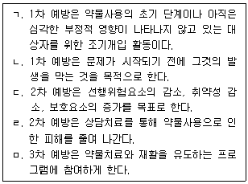
- ㄱ, ㄴ
- ㄱ, ㄷ
- ㄴ, ㄹ, ㅁ
- ㄱ, ㄷ, ㄹ, ㅁ
- ㄱ, ㄴ, ㄷ, ㄹ, ㅁ
(정답률: 알수없음)
74. 대마에 관한 설명으로 옳은 것은?
- 대마초를 건조한 후 압착시켜 수지 형태로 만든 것이 하시시(hashish)이다.
- THC 함유도는 대마 오일보다 대마 수지에서 높다.
- 우리나라는 2015년부터 의료용 목적으로 대마 성분 의약품 처방이 합법화되었다.
- 대마는 급성 독성이 강하여 강성약물 중 하나이다.
- 장기간 복용 시 드라베증후군이 나타난다.
(정답률: 알수없음)
75. 헤로인에 관한 설명으로 옳지 않은 것은?
- 모르핀의 1/2로 동일효과를 보이며, 모르핀보다 지속시간이 길다.
- 초기 단계에는 정신적 안정감, 황홀감이 유발된다.
- 사용 중단 시 혈중 내 칼슘 감소로 경련 증상이 나타난다.
- 남용자는 5~10일 동안의 금단을 겪으며, 경미한 문제들은 6개월이 지난 뒤까지도 관찰된다.
- 남용자 중 일부는 바늘광 현상도 나타난다.
(정답률: 알수없음)
4과목: 위기상담
76. 린더만(E. Lindemann)이 제시한 내담자의 정상적인 애도 행동으로 옳지 않은 것은?
- 신체화 증상의 호소
- 사별한 사람과의 동일시
- 죄책감과 적대감의 경험
- 사별한 사람에 대한 수용
- 일상적인 생활에서의 혼란
(정답률: 알수없음)
77. 다음이 설명하는 위기이론은?
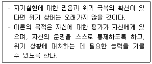
- 체계이론
- 혼돈이론
- 대인이론
- 적응이론
- 정신분석이론
(정답률: 알수없음)
78. 라이트너(L. Leitner)와 벨킨(G. Belkin)이 제시한 심리사회적 전환모델에 관한 설명으로 옳은 것을 모두 고른 것은?
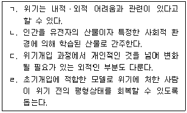
- ㄱ, ㄹ
- ㄴ, ㄷ
- ㄱ, ㄴ, ㄷ
- ㄴ, ㄷ, ㄹ
- ㄱ, ㄴ, ㄷ, ㄹ
(정답률: 알수없음)
79. 다음에서 설명하는 미첼(J. Mitchell)의 위기개입 방법은?
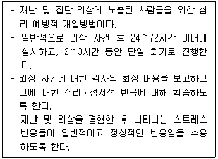
- 심리적 응급처치(PFA)
- 점진적 근육이완법(PMR)
- 현실감각(grounding) 기법
- 위기상황 스트레스 관리(CISM)
- 위기상황 스트레스 경험보고(CISD)
(정답률: 알수없음)
80. 위기의 특성에 관한 설명으로 옳은 것을 모두 고른 것은?
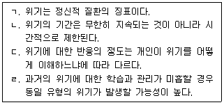
- ㄱ, ㄹ
- ㄴ, ㄷ
- ㄴ, ㄹ
- ㄴ, ㄷ, ㄹ
- ㄱ, ㄴ, ㄷ, ㄹ
(정답률: 알수없음)
81. 다음에서 설명하는 치료 기법은?
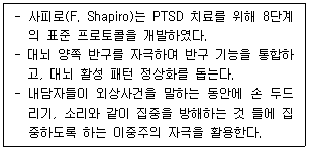
- 심리교육
- 지속노출치료
- 인지재구조화
- 스트레스 면역훈련
- 안구운동 둔감화와 재처리
(정답률: 알수없음)
82. DSM-5에 분류된 외상후 스트레스장애(PTSD)에 관한 진단 기준으로 옳지 않은 것은?
- 장애의 기간이 2주 이상이어야 함
- 외상성 사건(들)과 관련되는 반복적인 고통스러운 꿈
- 외상성 사건(들)의 반복적, 불수의적, 침습적인 고통스런 기억
- 외상성 사건(들)에 대한 고통스러운 기억, 생각, 또는 감정을 회피
- 외상성 사건(들)후에 자신, 다른 사람 또는 세계에 대한 지속적이고 과장된 부정적인 믿음
(정답률: 알수없음)
83. ( )에 들어갈 내용을 옳게 나열한 것은?
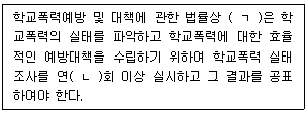
- ㄱ: 여성가족부장관 ㄴ: 1
- ㄱ: 교육감 ㄴ: 2
- ㄱ: 교육부장관 ㄴ: 1
- ㄱ: 여성가족부장관 ㄴ: 2
- ㄱ: 교육감 ㄴ: 1
(정답률: 알수없음)
84. 골란(N. Golan)이 제시한 위기단계에 해당하지 않는 것은?
- 재통합(reintegration)
- 취약상태(vulnerable state)
- 위험사건(hazardous event)
- 스트레스 누적(stress pileup)
- 촉발요인(precipitating factor)
(정답률: 알수없음)
85. 다음의 질문들에 모두 해당하는 외상후 증상은?
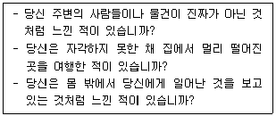
- 망상
- 해리
- 환각
- 공황발작
- 침투적 사고
(정답률: 알수없음)
86. 가정폭력이 아동청소년기 자녀에게 영향을 미치는 역기능적 특성으로 옳지 않은 것은?
- 자녀는 폭력 가해 부모와는 동맹 관계를 형성하지 않는다.
- 부모의 폭력은 청소년기 자녀의 가출을 예측할 수 있는 요인이다.
- 폭력가정의 아동청소년이 나타내는 정서로 우울을 들 수 있다.
- 가정 내 폭력이 반복되는 과정에서 청소년기 자녀는 심한 분노를 느낀다.
- 어린 시절 학대 받은 경험이 있는 부모는 아동에 대한 학대 가능성이 높다.
(정답률: 알수없음)
87. 학교 밖 청소년 지원에 관한 법령상 학교 밖 청소년 지원 위원회의 심의사항이 아닌 것은?
- 학교 밖 청소년 지원계획의 수립에 관한 사항
- 학교 밖 청소년 지원정책의 목표 및 기본방향에 관한 사항
- 학교 밖 청소년 지원을 위한 법령 및 제도의 개선에 관한 사항
- 학교 밖 청소년 지원을 위한 지역사회 자원의 발굴 및 연계ㆍ협력 사항
- 관련 기관 간 협력체계 및 지역사회 중심의 지원체계 구축에 관한 사항
(정답률: 알수없음)
88. 트라우마 체계 치료(Trauma System Therapy)에서 청소년 A의 치료단계는?
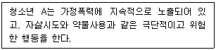
- 극복(transcending)
- 이해(understanding)
- 유지(enduring)
- 안정(stabilizing)
- 생존(surviving)
(정답률: 알수없음)
89. J. Cull과 W. Gill(1988)의 자살 위험성 예측 척도(Suicide Probability Scale)에 관한설명으로 옳지 않은 것은?
- 국내 청소년들에게 맞게 번안ㆍ수정하여 사용하고 있다.
- 부정적 자기평가, 적대감, 절망감 및 자살사고의 내용을 포함한다.
- 14세 이상 청소년에게 사용할 수 있다.
- 척도를 사용하여 자살위험의 정도를 파악할 수 있다.
- 일상에서 경험하는 우울증상의 정도를 파악한다.
(정답률: 알수없음)
90. 청소년의 비자살적 자해(NSSI) 동기가 아닌 것은?
- 정서적 고통으로부터 벗어나기 위해
- 자기처벌의 수단으로
- 긍정적인 느낌이나 희열을 경험하기 위해
- 타인을 조종하거나 다루기 위해
- 삶을 끝내기 위해
(정답률: 알수없음)
91. 심리적 응급처치(Psychological First Aid)에 관한 설명으로 옳은 것은?
- 즉각적이고 우선적으로 제공되는 다회기 개입방법이다.
- 외상사건 후 생존자들의 즉각적이고 실제적인 지원에 중점을 둔다.
- 논박을 통해 외상사건 피해자의 불안과 두려움을 야기하는 사고를 변화시킨다.
- 심리치료 전문가만 수행할 수 있다.
- 트라우마 디브리핑(trauma debriefing)을 중점으로 다룬다.
(정답률: 알수없음)
92. 학교폭력예방 및 대책에 관한 법령상 전문상담교사 배치 및 전담기구에 관한 설명으로 옳은 것은?
- 학교의 장은 학교에 대통령령으로 정하는 바에 따라 상담실을 설치하고, 초ㆍ중등교육법 제20조의2에 따라 전문상담교사를 둔다.
- 전문상담교사는 학교의 장 및 심의위원회에 학교폭력에 관련된 피해학생 및 가해학생과의 상담결과를 보고하여야 한다.
- 학교의 장은 교감, 전문상담교사, 보건교사 및 책임교사, 학부모 등으로 학교폭력문제를 담당하는 전담기구를 구성한다. 이 경우 학부모는 전담기구 구성원의 2분의 1 이상이어야 한다.
- 전담기구는 학교폭력에 대한 실태조사와 학교폭력 예방 프로그램을 구성ㆍ실시하며, 학교의장 및 심의위원회에 학교폭력에 관련된 조사결과 등 활동결과를 보고하여야 한다.
- 피해학생 또는 피해학생의 보호자는 사실 확인을 위하여 전담기구에 실태조사를 요구할 수 있다.
(정답률: 알수없음)
93. 학급에서 실시하는 청소년 자살예방교육의 내용이 아닌 것은?
- 자살 위험요인과 위험징후 설명
- 다른 사람의 자살위험징후 인지하기
- 자살 사고 변화시키기
- 도움을 구할 수 있는 곳에 대한 정보
- 자살위험이 있는 친구와 대화하는 방법
(정답률: 알수없음)
94. 재난대응 위기상담 3단계(안전, 기억과 애도, 일상으로의 복귀)를 제시한 학자는?
- 허만(J. Herman)
- 맥위터(J. McWhirter)
- 홉폴(S. Hobfoll)
- 길리랜드(B. Gilliland)
- 브레머(L. Brammer)
(정답률: 알수없음)
95. 아버지의 죽음을 경험한 청소년 A에게 외상초점 인지행동치료를 실시할 때 심리교육에 관한 설명으로 옳지 않은 것은?
- 죽음과 관련된 정보를 포함한 유인물을 사용할 수 있다.
- 아버지의 죽음 후 경험하는 증상에 대한 정보를 제공한다.
- 정서조절을 위한 근육이완훈련을 실시한다.
- 치료적 개입에 대한 정보를 제공한다.
- 심리교육은 상담 전체 과정에 걸쳐 사용될 수 있다.
(정답률: 알수없음)
96. 다음 상황에 처한 청소년의 자살 보호요인은?
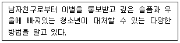
- 또래와 교사의 지지망
- 긍정적인 자아존중감
- 낮은 충동성
- 문제해결기술
- 가족 간의 원만한 의사소통
(정답률: 알수없음)
97. 학교 밖 청소년 지원에 관한 법령상 학교 밖 청소년 지원센터에서 받을 수 있는 지원과 지원사항의 연결이 옳지 않은 것은?
- 자립지원 - 생활지원, 문화공간지원
- 직업체험 및 취업지원 - 직업적성 검사, 직업소개
- 경제지원 - 경제교육, 피복비지원
- 상담지원 - 심리상담, 진로상담
- 자립지원 - 의료지원, 정서지원
(정답률: 알수없음)
98. 괴롭힘 예방프로그램인 OBPP(Olweus Bullying Prevention Program)에 관한 설명으로 옳지 않은 것은?
- 괴롭힘 관련 설문조사를 정기적으로 실시한다.
- 학교전체가 아닌 학급에서 진행되는 프로그램이다.
- 학급에서 학부모와의 모임을 진행한다.
- 관여학생 학부모와 진지한 대화를 한다.
- 관여학생에 대한 개별적인 개입을 마련한다.
(정답률: 알수없음)
99. 학교폭력 피해자 A의 상담 초기과정에서 사건관련 질문으로 옳지 않은 것은?
- 언제부터 또 얼마나 자주 괴롭힘이 있었나요?
- 괴롭힘을 당하지 않기 위해 어떻게 하면 좋을까요?
- 그런 피해를 당하기 전에 어떤 일이 있었어요?
- 괴롭힘을 당한 일에 대해 말해줄 수 있겠어요?
- 부모님은 이 일에 대해 알고 있나요?
(정답률: 알수없음)
100. 청소년 인터넷 중독 자기보고형 척도인 K 척도의 하위요인들에 해당하는 것을 모두 고른 것은?
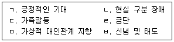
- ㄱ, ㄴ, ㄷ, ㄹ
- ㄱ, ㄴ, ㄹ, ㅁ
- ㄴ, ㄷ, ㄹ, ㅁ
- ㄴ, ㄷ, ㅁ, ㅂ
- ㄷ, ㄹ, ㅁ, ㅂ
(정답률: 알수없음)
킨제이 미국 전연령층 성행위 연구
모쉐 여성의 성 연구 여성 성권리 높힘 공헌
허쉬펠드 일탈적 성행위 관심
엘리스 성의 정신병리학 저서 발표